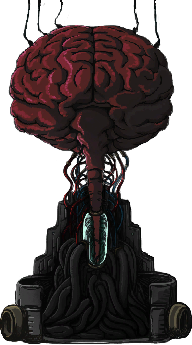
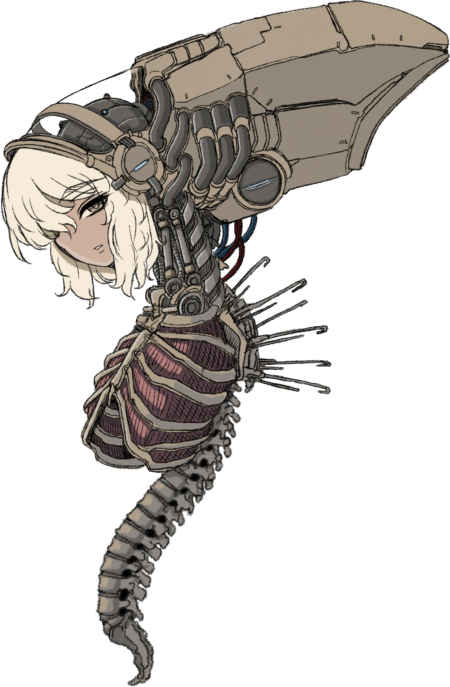
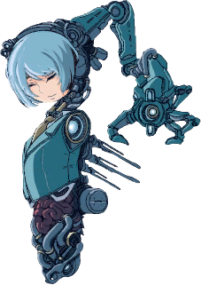
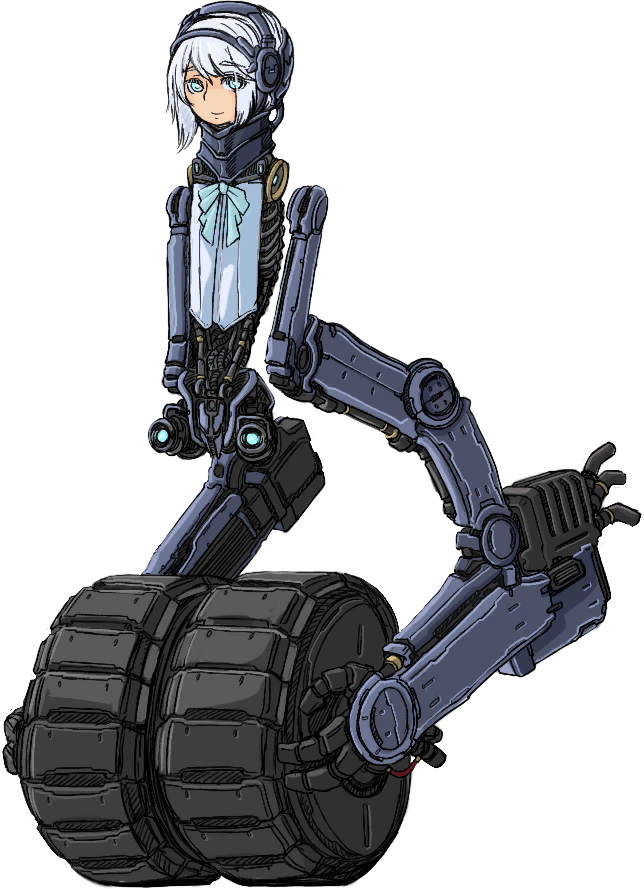
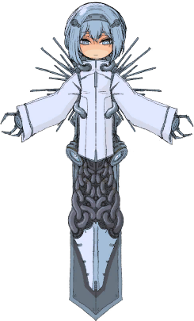
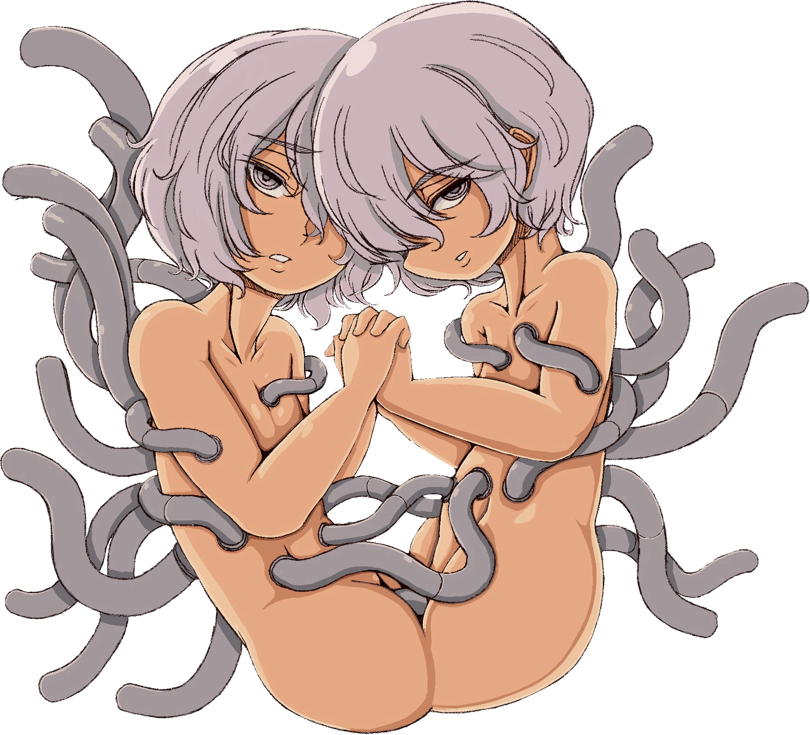
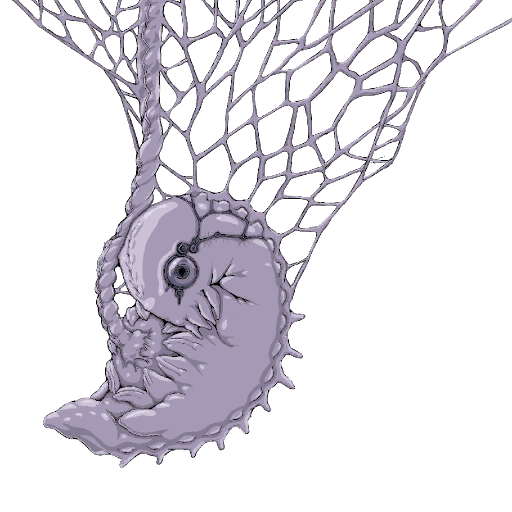

[Angels (In reality Demons)]
Vectra the Gluttony She gave the starving people an abundance of bread, water and air. |
 |
 |
Celeste the Sloth She gave a roof, walls, and floor to rest on to the stranded and exhausted. |
Harkonnen the Greed She gave property rights again to a people who had been robbed of everything. |
 |
 |
Lysander the Envy He made people who were forced to live at the bottom climb up again. |
Gaussia the Wrath He gave the vanquished a fist to raise again. |
 |
Krone the Pride He gave dignity again to a people robbed of pride and oppressed. |
|
Delirium the Lust They protected a people forced to castrate themselves, giving them joy of flesh again. |
 |
Sleeping God Created by the Angels as a human friendly god, the lack of a God caused all the problems so they thought by creating one it would fix them, its dream destroyed both the humans and the Angels mind through their cybernetics, its brief existence was enough to calm down the Demons from attacking humanity any further. |
 |